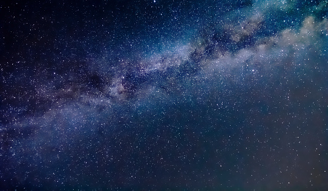

El Universo es el espacio y el tiempo que abarca todo aquello que existe, es decir, todos los tipos de materias, los planetas, la energía, la luz, las estrellas, los satélites, las galaxias y otros objetos celestes, incluso, las leyes y las constantes físicas que los gobiernan. Por ello, el Universo es difícil de explicar o medir.

El Universo puede ser infinitamente grande o puede contener otros universos, sin embargo, hay especialistas que opinan que, aunque ciertamente el Universo es muy grande, también es finito y continúa expandiéndose según la hipótesis cosmológica del Big Freeze.

es una pequeña muestra de lo inmenso que es y lo insignificantes que somos